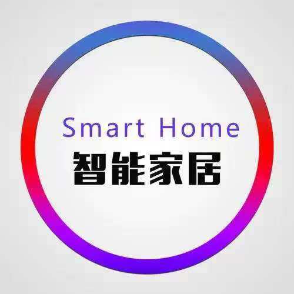

01 / Computer vision
智能银行卡识别
把一张真实卡面转换为可复核的号码识别结果。
- 目标
- 定位卡号区域并识别连续字符
- 实践重点
- 预处理、区域定位、字符切分与结果检查
- 工具
- Python · OpenCV · OCR
- 读入与校正
- 号码区域定位
- 字符分割
- 识别与复核
当前证据 已公开输入样例与处理链路；演示视频和源码将在隐私处理后补充。
Selected projects
让兴趣驱动行动，把视觉算法、嵌入式控制和真实设备连接成完整链路。
01 / Work
不只列技术名词，也说明每个项目的目标、处理链路、本人实践重点和目前可公开的证据边界。
01 / Computer vision
把一张真实卡面转换为可复核的号码识别结果。
当前证据 已公开输入样例与处理链路；演示视频和源码将在隐私处理后补充。
02 / Embedded vision
2025 年全国大学生电子设计大赛 C 题实践，将检测结果送到嵌入式执行端。
当前证据 已公开赛题背景与技术链路；实机录像、误差和延迟数据尚待归档。
03 / Embedded control
用 STM32 连接多类元器件，完成环境感知、状态判断与联动输出。

当前证据 已公开系统结构与实践重点；接线图和现场演示仍在整理。
04 / Linux operations
把多个网页和 Node.js 服务整理成可发布、可回滚、可远程诊断的站点系统。
当前证据 本地发布、回滚和安全回归已自动化；真实公网验收需要目标设备连接。
02 / Engineering
展示时同步说明输入、处理、输出与验证方式，才能让项目结构被理解和复现。
记录相机、传感器、光照与数据格式，避免把输入问题误判成算法问题。
将采集、预处理、识别、通信和控制分段验证，每段都有可观察结果。
同时关注准确率、延迟、稳定性和异常恢复，而不是只保留一次成功截图。
03 / Explore